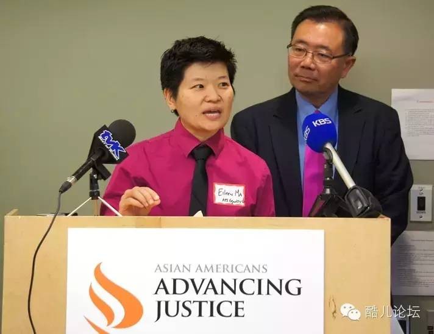
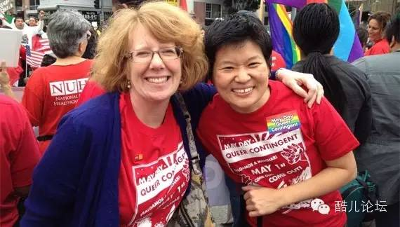
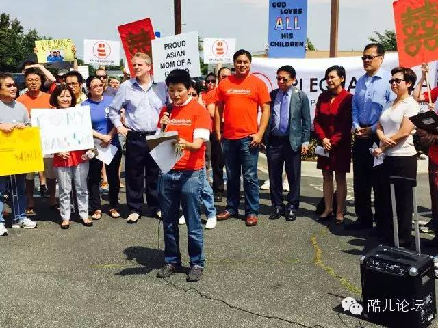

不婚的婚姻平权者

专访洛杉矶亚太裔平等协会主管Eileen Ma
采访者：Owen旭
翻译：Owen旭 锄药 禾风
酷儿论坛出品 www.motss.info
写 在 前 面
这篇采访其实是我2014年夏在UCLA旁听的一门LGBT Study课程的作业。这门课的话题是关于洛杉矶的社会变革与运动，主要是讨论有色族裔、工会运动、公共交通、环境保护、同志运动等议题，特别是同志议题与其他议题的交叉与关联。所以，这篇采访的基调也基于此。
在我请课程老师Raja给我推荐一位在LGBT组织上有特别经验的采访对象时，他说Eileen是一个跳进他大脑的名字。而我听到这个名字也很兴奋，因为我在课程必读书目Making Democracy Matter中了解过她的故事。在这本书的众多叙事者中，Eileen无疑是最吸引我的，不仅是因为她的华裔身份，更因为她在很多议题上都有涉及。她的多重身份（有色人种、女性、同性恋、移民后代）与跨议题政治活动（工会运动、环境种族主义运动、医疗改革、同志平权运动），是这门课的最佳活案例。
我的采访方式是基于Making Democracy Matter这本书里所提出的这些活动家们的“四个成长过程”理论：身份认同、找到同类和组织、开展关于某一议题的运动、取得一定成功。我先开始试着去了解她在成长过程中的哪些因素影响到了她对自己众多身份的认同，以及她在早期所进行的尝试；继而我又根据她的经历了解她的政治运动历史，尤其是其中的差异和转变。这些当然也都是在“洛杉矶”和“话题交叉”两个主旨上进行的。虽然这不像论坛之前的采访一样关注普通同志的个人生活，但是我觉得，当有这样一部分人在为了我们的权益而奋斗时，我们应该去了解一下他们的经历与遭遇，同时也关心一下整个同志社群所面对的问题。
由于当时正好临近她所在的洛杉矶亚太裔平等协会成立9周年庆祝日，她的工作相当忙碌，因此我们采取了电话采访的方式。很多话题由于缺少现场的互动都没有很展开和深入，同时由于通话质量与我的英语水平有限，有些内容也没有得到完整的记录和表达，在此表示我的歉意。还要感谢锄药和Array帮我进行的翻译与听写，以及禾风、暖阳修改与整理。
采访过程中的口语错误都被如实记录，所以……辛苦强迫症们了~
我想从您的小时候的生活谈起。你是在一个华人移民家庭长大的，在你的成长过程中，你是怎样逐渐意识到自己的华人或者华人女性的身份，并且完成对这个身份的自我认同的？
我出生在美国纽约。我的父母是1949年从大陆迁到台湾的，在20世纪60年代末他们到了加拿大，不久后又移民到了美国。我在纽约一个以白人为主的社区里长大，那个社区很多都是早期意大利和爱尔兰移民的后裔。不过我也上过一个中文学校，在那里我遇到了很多居住在那个社区的中国家庭。
那你的高中是有很多华裔或者其他移民后裔的学生还是以白人为主呢？
我上的高中主要都是美国本土的学生。而在中文学校里，我们都是华裔美国人，很多人的父母都是在60年代末期移民到美国的。
身处这样一个白人为主的学校，你有什么感受？你怎样在这样一个白人为主的学校里确定自己的华裔美国人身份呢？
我成长于一个在文化上很“中国”的家庭。我们和爷爷奶奶的关系很好，他们保留了很多传统的习俗和节日习惯。我的父母也很尊重这些传统。这是我成长的环境。但是我觉得在高中时我并没有过多的考虑这个问题。在我的高中里，只有两、三个华裔学生，虽然我们很显然是不同的，但是我们没有总是把华裔身份带到学校里，因为这只是我们身份的一部分。在那个时候我们并不会过多考虑这些问题。
你能进哥伦比亚大学，在高中时一定很优秀吧？你在高中就开始了你的活动了吗？你有没有参加一些对你以后帮助很大的社团？作为一个优秀的运动组织者，你有非常优秀的工会组织能力，你觉得你的高中经历对你的工会运动能力和社区基层工作能力帮助大吗？
我的确是个好学生，虽然比不上我的姐姐（笑）。我的成绩很好，别人一直都觉得我会上一个好大学。我觉得至少对我和我的同班同学来说，只要拥有一个好成绩，自然而然就会进入一个好的大学。
我是在我28岁，即毕业并参加工作以后才出柜的。我上高中时是上个世纪80年代，那时候高中里并不像现在一样有很多同性恋-异性恋联盟。我当时有一个很好的朋友是男同性恋，但是他更有可能是在学校外的地方找到了同志社群，因为那个时候的高中对很多人来说还是很封闭保守的。
我觉得我在高中打下了很好的基础，主要是在学习上和交流技巧上，包括用英语交谈和写作的能力，以及对不同组织的适应能力。上了大学后，这些能力得到了进一步的发展。而当我成为一名组织者时，最重要的就是有效地和别人交流的能力。此外，我家当时经营着一家餐厅，我小时候经常在那里帮忙，并且和不同的人进行交流。我在那里学会了如何变得友好和招人喜欢。
你从大学生生活里获得了哪些有用的东西？你觉得哥大哪些特别的地方影响到了你？
我刚进大学时其实并没有一个明确的目标。那是我第一次接触到众多不同的理念、各种新的主题和各式各样的人。我在大学里认识和接触的人是以其他方式无法涉及到的。还有我大学所在的城市——纽约，这座城市使我感到更加自信，它让我学会了年轻人的行为方式。此外，我在这里第一次真正接触到了亚裔或者华裔群体，并且结识了很多亚裔或华裔的朋友。这也让我对自己的身份感到更加自信和认同。我觉得18到22岁的年纪正是一个人的性格逐渐成型的时候，我在这个时候变得更加外向，学会了如何去寻找在大学生活里让我感兴趣的东西。
有三点地方。第一是它所在的纽约市。这对我的影响很大，因为我之前都待在小城镇，直到我来到这样一个大都会读书。尽管它比很多国际化大都市甚至许多中国城市要小很多，但是在这里，无论你想做什么，无论你愿意成为什么样的人，都是被接受的。我觉得这点是我的学校所蕴含的文化之一。同时，哥大这样一所独立于社会的机构提供了一种保护，让你敢于探索，让你感到你可以做很多事。这点对我的帮助也很大。我还遇到了很多非常优秀的人，这让我的大学经历增色不少。此外，哥大和纽约都有很强的多样性，那里有很多有趣的人，这让我逐渐建立起了对这种多样性的欣赏，也逐渐意识到了我在这种多样性中的位置。

（2012年的一次同志游行）
我很好奇是什么促使你在毕业后从事工会运动工作的？
我在大学读的是哲学专业。大多数哲学专业的学生都会考虑毕业后到法学院或者其他研究生院进修。但我并不确定我想要做什么。当时学校里正好有一个人在招聘工会组织者。我结识了这个人并且参与到了培训中，我就这样参与到了工会工作，因为这和我想做的或者说我觉得我应该要做的很切合，跟我所信奉的理念很切合。
你信奉的理念具体是什么？
在我开始进行工会组织时我已经学了很多哲学的内容。这听起来很严肃，不过我的确学习的是什么是对的或错的。我开始阅读很多关于经济权益以及它与其他公民权益如何相关联的材料。人理所应当地有权利来确保你的正常生活。我觉得工会组织是强调这些权利的一种方式。我很清楚当人们在赚钱的时候并不关心他们有怎样的权利，但实际上他们可以很好的利用这些权利。
对其他人来说，成为一个工会组织者或者志愿者而不是去法学院可能会是一个艰难的选择，毕竟如果去法学院你将来可能会有更高的收入。你是怎么做出这个选择的？
在那个时候这并不是一种牺牲，也不是一个挑战。我的父母在我刚进大学的时候的确想让我进法学院。不过我并不想这样。我最终抓住机会来去做那些让我觉得更好的事。
所以这是很自然的、基于你内心的一个选择？
完全是的。我觉得没有其他选择更让我觉得舒服了。虽然我确实有点想回到法学院完成学位，在这里我可以先完成逻辑的培养。
我对你的那些基层的工作也很感兴趣。你从这些挨家挨户的工作里得到了什么？
当我为工会工作的时候，我还是20出头的样子。我有很多经历，大多数是在这个国家不同的城市进行活动。那个时候我所做的基本是出去或者在电话里跟他们谈论工作环境的问题，并且了解如何进行改进。因为那是我还是一个初入社会的成人，这些经历给我留下的印象非常深。我了解到了人们的生活方式以及这个社会运作的方式，因为我能听到人们工作上的艰难处境。这让我知道有很多人在比我艰难得多的状况下挣扎着，却依然保持乐观和充满希望。这些都太难以置信了。还有一点是，不管人与人的差异有多大，不管经历有何不同，也不管在哪里、工作是什么，人们身上总有都有相似的地方，都会渴望从家庭得到些什么，都会希望被正确对待，都希望改善他们的处境。这些有非常多的相似点，而我逐渐开始明白这一点并欣赏它。我经历了那么多，走过了这么多的城市，但是在参加工会运动的那么多年后，这仍然是我记得最深的，也将影响我以后的生活。
您在工会的工作里遇到过什么样的挑战？能给我们讲讲工作中遇到过什么有意思的事吗？有没有什么人给您留下很深印象的？
我认为那个时候最大的挑战是保持积极的心态。工会的工作是很困难的，因为人们对雇主心怀忌惮，所以常常会对你有所保留。因此我认为保持积极的心态和希望往往是最大的挑战。
我遇到过有些人，他们的工作环境十分恶劣，但心态仍然很积极，这样的人给我留下了很深的印象。除此之外，我也遇到过一些人，他们敢于为了改变现状而付出行动，即便是很小的改变也如此。他们会和我一道跟其他人去交流，像他们的邻居、同事。这实际上是很了不起的行为，因为他们也可能很担心被老板炒鱿鱼，穿小鞋，但他们依然敢这么做，所以这也给我很深的印象。这样的人我能想到不少。他们作为雇员已经工作了很久却看不到什么改变，并愿意为了改变现状付出努力。
其实我觉得您和他们很相似，也是个很积极进取，而且坚持不懈的人。我看过您以前的一篇采访，您讲了一个老兵的故事，当他打算关上门的时候您对他说：“你试试看会如何？”您觉得是什么让您成为一个不断进取的人呢？
这个问题不是那么好回答吧。要说一个人为什么具有某种行事风格，这很难讲。我觉得自己一直是个很认真的人吧。我知道在很多事情上，并不是每个人都同样幸运。很多人生活中都有过很糟糕的经历，这让我有种感觉，觉得事情不应该是这样的。我没法具体说清楚这种感觉是怎么来的，但总之你就是觉得不应该这样。我感到有责任为改变现状出一份力，而这是需要坚持不懈的。你永远也不知道你做的事会不会有成果，但是你可以怀着信心不断地尝试。尤其对于像我这样拥有不少优越条件的人来说更应如此吧。像我受的教育啊，我父母努力为我创造的条件啊，这些方面我都享受了许多优越的条件，所以我应该利用这些优势做点有意义的事情。你很难知道自己是不是采取了正确的策略，但至少你应该试试。
我还觉得，您和那些跟您交流的人互相激励着对方，您带给他们力量，他们也给您力量。
嗯我同意这种说法。你永远也不会觉得你是完完全全一个人。你越是和他们在一起，你就越感到有力量去完成你的事。实际上我明白了一个道理，作为组织者，和大家共同努力完成一件事比自己一个人奋斗更有意义。
关于Eileen的工会经历，可以看看这段采访：
你什么时候来到洛杉矶的？
1996年。
在那之前你是在纽约和迈阿密吗？在这些城市里，你有注意到性少数群体问题和种族问题的结合吗？
在1993年大学毕业前，我都一直在纽约。在一个短暂的夏季后我搬到了明尼苏达，在那里我被培训成为一个工会组织者并从事于相关工作。这本来是个临时的工作，但是我在那里待了整整9个月。后来我搬到了华盛顿，在那里住了一年半，然后在密西根住了一年半，后来就来到了洛杉矶。
正如我之前说的，我在28岁前一直没有出柜，也很少从事于性少数群体的议题，直到我搬到洛杉矶情况才改变。当我还在华盛顿和密西根的时候，我结识了很多性少数群体的朋友，并且开始适应不同的文化环境，这既是我的政治运动的一部分也是我很了解的东西。所以那个时候我并没有太注意到这些交叉。我大多数的工作还是组织不同的群体，让他们有更好的相互理解。
你能比较下纽约和洛杉矶吗？你觉得这两个城市的多样性有什么差异吗？
我觉得这个话题能写几本书了。纽约人口非常的密集，在那样一个小半岛上有上万的居民。 而在洛杉矶，不管到哪儿都是离不开车的，人们去寻找各种不同的体验的时候不管是坐车还是通过公共交通都不大容易。这使得两座城市间的流动性有所不同。具体的人口数量也有一定差距。同时我们还很靠近墨西哥，因此有众多来自中美洲的移民。而在纽约则有更多来自加勒比湾（如波多黎各）的拉丁裔群体。如果你了解美国历史，你会发现那些有着大量类似群体的城市都会有自己独特的地方。太多不同了。最重要的一点是，相比于纽约，加州有着更长且更普遍的亚裔活动历史，和更大的亚裔群体。这两个地方的亚裔人口差距悬殊。洛杉矶的亚裔后代也有着不同的活力。我觉得纽约还是很不同的。
是什么原因让您在2000年的时候加入了Health Access？为什么放弃了工会的工作转而投入医疗保健改革的工作中来？
那个时候我在工会工作已经有很长一段时间了，有不少工会的活动渐渐开始让我感到泄气，我也面临一些极为艰难的挑战。感觉不是那么好了。不是说那些活动不好，只是我自己感觉不对劲了。所以我开始想要改变自己的职业道路。正巧这个时候有到Health Access工作的机会，所以我就跳了槽。因为两者所做的工作是很相似的，只是活动的议题不同。新的工作我大概干了两年，然后我的女友去读研究生了，所以我们一起搬到了纽约，我也离开了Health Access再换了新工作，后来又跳槽到迈阿密。
您在2005年的时候创建了API Equality LA（洛杉矶亚太裔平等协会）？
不是我创建的。它是由多人创立，我是在2006年的时候作为志愿者参加了他们的情况介绍活动，后来才成为正式成员。
那您是什么时候开始从事LGBT方面的工作的？
我完成自我认同，和向身边的人出柜是在28岁。那期间我还在为SEIU和Health Access工作。因此性取向是我身份的一部分，但和我的政治工作没有关系。这是我那时生活和社交的状态。直到2006年我从迈阿密搬到洛杉矶的时候我才开始从事LGBT方面的工作。要说原因吧，我在迈阿密工作的社群也是我十分在乎的，所做的议题也是我真心喜爱的，但我还是觉得自己和它们有些距离，因为工作和我的性少数身份没有关系，我觉得自己没能全身心地投入到工作中。所以我想能专门做一些LGBT议题的工作。另外，我也想回到洛杉矶。所以洛杉矶同性恋中心，也就是今天的洛杉矶LGBT中心，给了我这样一个机会。所以我开始从事有关婚姻的议题，有关婚姻平等的。
具体是什么内容？
那个时候大家正在准备一场投票，2008年的时候我们打算....
和第8号提案有关？（回复“八”了解）
对，就是它。06年的时候人们已经预料会有这样一场投票，所以我们在为此作准备，这就是后来的第8号提案。
我感觉第八号提案引起了很多关注，人们为它开展了很长时间的工作吧？
是的。就像我说的，2006年的时候人们已经开始等待这样一场投票了，而加州法院的裁决是在08年，所以那两三年中我们一直关注它。因为它是一个和我们相关的议题，所以在我们的社群之中是一个很大的热点。
我想听您聊聊第8号提案的事，您为此所做的，还有您在API的其他工作。08年人们眼看提案的裁决就要到来的时候，您心里在想什么？
像我刚才所说，那以前我是没做过LGBT工作的，之前那只是我身份的一部分但和我的工作无关。而且我也没想过结婚。真的是这样。所以对我个人而言这并不是我特别关心的议题，但我明白这个议题对很多LGBT人群的重要性，我也明白这是一种根本的不平等，因为我们的法律仅仅因为一部分人的性向就对他们区别对待。所以这个议题在我眼里也和其他的政治议题相似，我强烈反对它主要是因为这是一个非常重要的政治问题，而不是因为它和我个人的关系有多大。我想要为LGBT社群工作，决心投入其中，而这是这个社群所选择的议题。从某种意义上说这是一个非常贴近生活的草根话题，所以我很容易就投入其中...
一开始为了阻止第8号提案的通过您做了哪些工作？
一开始我们只是努力寻找志愿者来对他人进行宣传教育，向人们介绍这个议题，争取人们的支持，支持对第八号提案投反对票，保障LGBT人群的平等权利。
后来在08年第8号提案被投票通过了。那时你是什么感觉？
我觉得，一方面来讲，那的确让人很有挫败感。这个结果让整个群体都很震惊。可能对于我们参与到之前的工作中的人来说不是那么令人惊讶，因为我们知道有不少人是和我们对立的。而且我们也能感觉到，做的工作还不够让自己稳操胜券。但这并没有减轻我们的难过。有意思的是，奥巴马也是这一年当选总统的，这使得这种局面给人的感觉是矛盾而复杂的。因为一方面我们可以看到LGBT平权在全国范围都在取得巨大进展，这带来很多希望；而另一方面，第8号提案让我们看到自己的路还很长。所以我当时有这种双重的感觉。

（2015年6月的一场集会，Eileen是发言者，后面是华裔国会女议员Judy Chu）
您觉得工会的工作和LGBT工作有没有什么不同？
我觉得它们区别很大。一个不同之处是，我最开始在洛杉矶同性恋中心的工作是为第8号提案做准备的，它的工作重心是在选举活动上，就是说我们希望影响到最终的投票。投票是全州参与的，而不同于工会活动是更为地方性的。工会也有选举，但仅仅局限于一小群人，而不是这样由民众广泛参与的，这一点很不一样。另外工会的工作流程也不一样，你先组织建立起一个工会，等工会建立了再力图制定和签订一些合约，而在这两者期间，甚至包括签订好合约之后，你都要想办法在员工中加强你的权威性。而对于第8号提案，你是尽可能让更多人在提案当天为你们投票，最终成果取决与这次投票，所以它是你们的目标所在。这也是一个很大的不同。
也就是说LGBT的工作更多是在立法上，而不像工会只是签订合同。
是的。它着眼的是政策的改变，甚至是立法上的，而不只是努力去争取一个合同。另外在基层的组织，社群的建立，这些方面也是有区别的。
您是什么时候开始把LGBT工作和种族议题，或者说API（亚太裔）的工作结合起来的？
那时我正在洛杉矶同性恋中心做有关第8号提案的工作，这是我谋生的正式工作。而我在API是作为一个志愿者和助手。在API我意识到，我们做这些公益议题时，应该对不同人群更有针对性一些。因为人们的经历是迥异的，这和他们的种族，性别等等都有关。我觉得API让我们开始意识到一个个不同的亚文化群体的存在，而我与他们的交流应更加有针对性，而不是套用和主流群体交流的模式。
加州的少数种族或性少数人群面临什么样的境遇？
其实我在洛杉矶不能算严格的少数种族了，但我觉得他们所面临的一个问题就是社会是否足够意识到他们的存在。当你想起LGBT群体时，多数时候你想到的形象是白人男同性恋。他们的身份很鲜明。但其实LGBT群体内部也是非常多样的。所以一些所谓的少数种族就面临这样一个问题，怎样让人们意识到这些人群的存在。而且不只是需要让人们知道有这样一群人，还需要让人知道，因为自己独特的身份，这些群体也有着不一样的经历，面临着不一样的困难。为了发现乃至解决他们的问题，首先需要让人们意识到有这样的问题。我觉得这是他们所面临的一个境遇。人们在方方面面的差异都可能带来不同的经历，比如肤色的不同是一方面，但我们还不能很好地处理这些差异。比如移民者的问题，罪犯的公正待遇问题，这都是一部分群体所独特面临的。如果我们不去发现理清，没有人会注意这些问题，更谈不上解决了。
作为一个有色人种的性少数女性，您有没有因为自己的身份而受到过歧视？
我觉得我的身份是很多方面的属性共同决定的，对我经历的影响也是多重的，所以很难讲某方面的身份对自己的经历有什么影响。事实上我感觉自己在生活中享有的优越条件是很多的，像我受到了优质的教育，我也没有经历过穷困，所以我觉得自己在很多环境下都是占有优势的。不过也的确有些时候我可以感到自己身份带来的阻碍，就因为自己是性少数，因为自己的外表不那么符合传统的女性形象，因为自己是亚裔。这些对我的经历是有不少影响。
您做的工作同时关系到种族议题和LGBT议题，是什么激励你去进行这样的结合？
我觉得一个很大的动力是一种可能性，即这些针对性少数有色人种尤其是女性的平权工作会对他们甚至其他各种各样的人造成什么样的影响。因为我觉得不管在讨论什么样的政策变化，或是社会环境的改变的时候，总会有人忽视一部分群体的权益。而如果能致力于给某些弱势群体带来根本性的改变，那是很激动人心的。这里面有很大的潜力。解决像种族主义，性别歧视，异性恋中心主义这样的顽固的社会问题，带来的是社会根本性的变革。
那您觉得现在的形势如何？您觉得API性少数社群的发声有没有被社会听到？
我认为我们是取得了很大进展的。在很多领域，人们都开始接纳我们这个群体的存在；人们知道了有这样一群人，他们的观点和自己并不一样。当然我们还有很长的路要走。可以看到，像洛杉矶API这样规模大、组织良好的亚太裔性少数团体还是很少的。但我肯定，和六七年前的形势相比，现在已经有了很大的进步。
您觉得有什么特定的事情最能反应这种进步吗？
2000年的时候有个第22号提案，这也是个反同的提案。如果你把2008年第8号提案的结果和那时比较一下，你会发现进步是明显的。在这段时间里，有很多LGBT平权运动，公开对LGBT平权表示支持的媒体和政治领袖也增加了不少。要想让我们群体的观点和诉求能充分表达，这仍然是件任重道远的事，但至少现在在媒体或者其他公开渠道，对LGBT平权表示支持或者无所谓的人越来越多。
您觉得亚太裔性少数群体当下面临的最严重的问题是什么？
我觉得有两点。第一是，尽管现在社会环境在改善，还是有很多人在自己的生活和社交圈中被视为异类。你在电视上可以轻易看到LGBT题材的影视作品，但作为一个女同性恋，你在你的家庭、工作中可能还是没办法完完全全做自己。所以我觉得对我们的亚文化群体还应进行更多这方面的教育。另一点，要让整个国家，乃至全世界的性少数人群都能自由地做自己，这更是任重道远。可能你比我更清楚该怎么讲这个问题，在中国做一个性少数人士的体验和在美国是很不一样的。在很多其他国家，其他州，乃至其他社区并没有这里这么高度发展的LGBT社群，在这里取得的进步要怎样在其他地方实现，这也是问题。你也要考虑工作的方式是否恰当，会不会引发人们的强烈反感。
您对中国大陆，台湾，还有香港的LGBT团体是否有了解？
我遇到过一些来自中国LGBT团体的人，因为我们洛杉矶LGBT中心每年都有一些实习生，所以我有机会跟他们中的一些人交流。我可能了解的不算多，但也多少知道一点。
我们有一个非官方的大学生LGBT组织，我们希望能让它得到官方许可。您对这样的运动有没有什么建议呢？
我觉得最重要的一点是不断争取更多人加入。这个工作要一直进行，因为你永远都会觉得人手不够。另外一点是要注意对领导人员的培养，他们要有足够的能力来保证各个部门运行顺畅。这两点是我觉得最重要的。
十分感谢您接受采访。
最后还有一段对Liberty Foundation 2012 Leader的采访，其中第一位就是Eileen：